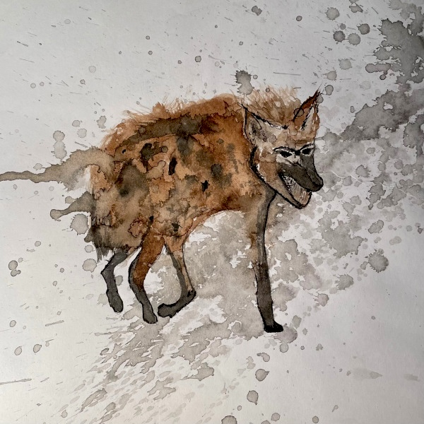

Some tips for surviving PhD overwhelm

Blah, blah, blah... just imagine an introduction about why all this matters. It obviously does to you, and me, and for all kinds of reasons, or neither of us would be here.
This is all written from a University of Victoria (UVic) perspective. But, much of what I talk about in terms of resources and approaches applies to all graduate programs and universities.
Oh, and these reflections and considerations are based on my experiences and my opinions, and do not in any way represent where I work or completed my degrees—and the same applies to the people associated with either. Also, nobody is paying me to write this. As if that would ever happen. Hopefully, you will find some of this useful.
Now, let's get to it.
Pulling the chute: options for tactical bailouts

You might reach a point when your body tells you that you have had enough attrition, whatever that means for you....
Read more/less
Context
Statistics Canada's data from 2018—the latest data available for this stat—shows that roughly 50% of doctoral degree students graduate after six years, which leaves roughly 50% of us either grinding onward or bailing.
I cannot emphasize this enough: you are not alone, and there is nothing wrong with you if you have had enough. PhDs are extreme experiences on the psyche, body, relationships, and wallet. It would be more strange if you did not experience debilitating stress at times.
When I first started my program, I heard about people who quit. I harboured some judgement about this. Not damning, but more on the edge of curiosity: what stopped them from finishing? Did they have crappy supervisors? Did their funding dry up? Then I did my rounds of comps, two written and two oral exams, and I got it. I so got it.
I almost quit my program twice. I was poised to send in an articulate and emotive email about it both times, with all the classic platitudes and gratitudes for everyone's understanding.
Besides the most patient partner on planet Earth, who would support me either way, two things turned it around: (1) I booked multiple sessions with a UVic counsellor, and (2) I realized that I could take a leave of absence. Just knowing that this last approach was an option took the pressure off. Like bear spray in the woods, you know you have it if you need it.
Resources
1. UVic's Mental health website: this site links you to all kinds of resources, many of which are free if you are a UVic student. You can book an in-person appointment or use the SupportConnect service, which can happen remotely. You might not get something out of it right away, but I found just being able to talk to someone consistently to be very helpful in itself. You never know until you try.
2. UVic's Leave of absence website: leaves of absence come in flavours, such as personal leaves, and leaves for medical, parental or compassionate reasons. Schools are bureaucracies, so of course there are rules and deadlines, but a leave is an option other than quitting outright. In the grand drama of your life, taking a year off to rest and reset will later seem like a mature choice, not a fault.
Slaying, or at least appeasing, the procrastination dragon
The procrastination dragon has a variety of melee attacks, but also some powerful spells, like Greater Distraction, and Indulgence Suggestion....
Read more/less
Context
Binge watching the extended versions of Lord of the Rings, monthly? Decided suddenly to become a luthier? Then you have failed your Wisdom saving throw and the procrastination dragon has you enthralled.
Wait, did you just lookup what a luthier is while halfway through reading this?
This section is long because procrastination is complicated. Also, I am addressing this from the level of your overall feeling of being in your current PhD program.
Procrastination means different things to different people. I do not define it as lack of disciple, mostly because I have unusual opinions about the concept of discipline, which I discuss a little, below.
Whatever procrastination means to you, I would define it as when you are in the practice of putting things off to the last minute despite, and this is key, having the means and time to do otherwise.
This Psychology Today article lists a number of psychological drivers for procrastination. Maybe some of those reasons will resonate for you. I do not believe that labels are helpful in this context, and it's important to remember the distinctions between your behaviours and your identities. You are not a procrastinator. Rather, you are procrastinating.
And, my fellow ADD-brain peeps know that procrastination is not necessarily linked to executive function—I don't have time to get into this here, so check out the helpful two-part Ologies episodes on ADD, on alie ward's website.
The way I see it, procrastination has two overall varieties: (1) you procrastinate when you are underwhelmed, (2) you procrastinate when you are overwhelmed. Let's deal with each in turn.
1. Underwhelmed procrastination
This one is tough to address in moments where you have realized that school goes on long after the thrill of learning goes on.*
Sadly, universities have yet to come up with a PhD program in Doing Fun Things All the Time. No matter what program you take, there will be times when you question your choices. There will be times when you have study remorse: when you take a class or research something that turned out to be way less interesting than you thought.
When you get underwhelmed, I suggest two approaches: (1) check in with your core values, and (2) follow curiosity over expectation.
What I mean by core values is all the big stuff that got you into being in your program, or even post-secondary studies in the first place. You can even incorporate these values into your planning, as I talk about, later. Let's be clear, here: "my parents wanted me to school" or "I wasn't sure what else to do" only works for so long.
I mean the consistent, unapologetic core values in your bones, the things you have known about yourself, or observed in yourself, since you can remember. We're not all lucky enough to know in our teens and twenties exactly what we want to do and be when we grow up, and that's OK. I am still figuring it out and I am, like, 111 years old.
But, I know I still hate racism. I know that seeing people put others down for just trying to be more fully themselves makes me deeply sad and misanthropic. I know that taking no action on these things, even in some small way, eats my guts hollow. I know that the world needs, and I mean really needs, more art. I know that empathy is a practice, not an abstraction.
So, if your core values get lost in the fog of the academy's expectations and approval mechanisms (grading, supervisor praise, funding awards, etc.), then check in with yourself.
Remember that this section is about managing procrastination. If you find your values misaligned with your academic choices, then do not expect motivation. Also, doing something that you do not find satisfying or valuable can amplify the overwhelm. But, you have options, and know that people love to help people that are truly motivated to learn something. Curiosity is the point on the compass that gets you out of expectation purgatory and into motivation land.
In the Random tips section of the What am I doing when I am doing grad school writing? page, I write "when you get stuck, follow curiosity, not expectations." What I mean by this is that no matter what you are doing, try to find what you are actually curious about in the journey. This is true of writing and of your program, generally.
* This is not a play directly on the lyrics of John Mellencamp’s 1982 hit, "Jack & Diane," but rather a painfully hipster reference to Built to Spill's use of Mellancamp's lyrics in their 1999 song, "You Were Right," which has a suitable mood for PhD overwhelm. I take this song as an anthem to carrying on together and for each other, in all our glorious frailty, in the face of human suffering. Welcome to the club.
Resources for when you're underwhelmed
1. Check-in with your core values by doing and Enneagram test. The goal is not to categorize yourself, as that would be ridiculous and counterproductive, especially since our minds our more like water than stone. But, you can use this test as a way to rediscover, despite life's inevitable changes, the places where you tend to spend time in your inner territories. Then, you can see how your values align or misalign with your academic choices.
2. That talk openly and honestly with your supervisor(s) about your concerns. I get that not everyone has a healthy supervisor relationship. But, ask yourself if things will magically get easier if you stay on the same path and say nothing. If you do not have that kind of relationship with your supervisor, or if you do not trust them, then talk to your department's Graduate Advisor, here's UVic's list of them by department. All the above have usually seen it all before and might have some ideas you have not considered.
3. Make an appointment with academic advising and see what your options are. You might be able to mix and match things in a way that you had not realized. For example, you might be able to work with your department to get authorized to take more courses outside your usual field. Or, maybe you can stay an extra semester to take a graduate co-op term in a place or field that interests you. After all, UVic's Co-op program advertises itself as having "the largest graduate co-op program in Canada."2. Overwhelmed procrastination
This one is easier to address, practically speaking. If you are in the habit of procrastinating because you are overwhelmed all the time, then finding a planning method that works for you will create a new habit.
And, let's get ahead of this right now. For those of you that have convinced that you produce your "best work" when you feel a crushing deadline, I don't buy it. I especially don't buy it if you have not applied consistent planning for a year to see the difference. Worst case is that you are less stressed out overall, and you have fewer typos because you had time to copyedit your work properly.
Being overwhelmed in a PhD program makes sense. It doesn't help that pretty much everyone around you is a last-minuter, including your professors. It has likely already occurred to you that these people are not healthy examples of balanced lives.
The academic ecosystem is one of neurotic attention to looming deadlines; it is a world of endless expectations to produce and do more. Like elite athletes, academics get good at one thing and are often hapless at most else. But, we can take a practice from elite athletes. As matter of survival and success, they learn to package huge goals into manageable and achievable kilometre-stones (I would write "milestones," but Canada is on the metric system, at least in theory).
Every mountain looks impassable if you fixate on the top, so practice on focusing on the few steps ahead of you and ignore the rest. Here are some approaches I found actually useful.
Resources for when you're overwhelmed
One way to counterspell procrastination overwhelm is with Gantt charts. I spiraled into overwhelm and ennui early in my coursework. It all felt so big and I felt so small. So, I converted my department's graduate handbook, in all its text-heavy mess, into timeline spreadsheet, and you can use it as a template to make your own version:
Finally, I want you to consider that discipline is not necessary if you make choices that work for you. Discipline, at least in the conventional sense, means that you are living in resistance to or tolerance of something. Yoda was right: there is no try. Only do. This is easier said than done, and takes a daily practice. That's why the final section of my guide is on taking care of yourself properly.
Outpace the havoc hyena: make a method for your content madness

The havoc hyena feeds on chaos in your emails, folders, files, and notes....
Take care of your body: it is the only ship you have

Your poor body is just trying to help you survive, and look what you are doing to it....
Read more/less
Context
Resources
There is no particular order to this section. This list is numbered, but only to keep track of things.
1. Use the iBreathe app or the Paced Breathing app (Android).
*** please share responsibly, and with credit to Kim S Shortreed, 2026, as needed ***